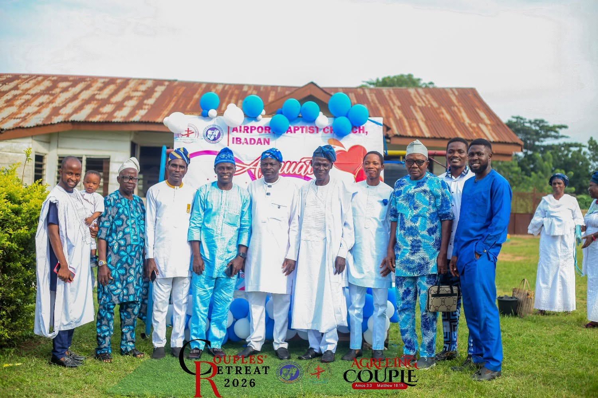

OUR HOME
Ibadan, Nigeria
Excellent Avenue, Alabidun Airport, Alakia.
Get directionsWELCOME TO AIRPORT BAPTIST CHURCH
A life rooted in Christ.
A light shared with our community.
Come as you are. Discover a place to worship, grow in faith, and walk together in Christian discipleship.
ROOTED IN FAITH · RISING IN CHRIST

Faith brings us together.
Life together at Airport Baptist Church.CHURCH AT A GLANCE
OUR HOME
Excellent Avenue, Alabidun Airport, Alakia.
Get directionsOUR PURPOSE
Christian discipleship for the whole of life.
Read our visionYOUR NEXT STEP
Come worship, connect, and grow with us.
Plan your first visitA PLACE TO BELONG
Welcome to Airport Baptist Church. Our motto, “We fly in Christ,” expresses our hope and identity in Jesus Christ.
Our vision reaches every part of life: developing the total person through Christian discipleship and sharing the light of Christ for the transformation of our community.
The vision that guides usOUR GUIDING VISION
To develop the total man in Christ through Christian discipleship, transmitting the light of Christ to enhance total transformation of the community.
THE VISION OF AIRPORT BAPTIST CHURCH
LIFE IN CHRIST
Our vision invites us to grow in Christ and carry His light into the world around us.
Looking to Jesus as the foundation of our faith, our hope, and the life we share.
Learning to follow Christ and allowing His truth to shape the whole of our lives.
Bringing faith into our relationships and seeking the transformation of our community.
YOUR FIRST VISIT
Whether you are exploring faith, looking for a church home, or returning to worship, you are welcome at Airport Baptist Church.
Connect before your visitCheck our Facebook page or call the church to confirm the latest service time.
Excellent Avenue, Alabidun Airport, Alakia, Ibadan, Nigeria.
Open the location in MapsIntroduce yourself when you arrive. We look forward to sharing in fellowship with you.
STAY CONNECTED
Find current church notices and upcoming activities on our Facebook page.
Read church updatesExplore encouragement and messages shared by Airport Baptist Church.
Explore church messagesContact the church to ask for prayer or speak with us before your visit.
Ask for prayerPICTURE GALLERY
A glimpse of fellowship and life together at Airport Baptist Church. Select a picture to take a closer look.
GOOD TO KNOW
Take the next step with confidence.
You will find us at Excellent Avenue, Alabidun Airport, Alakia, Ibadan, Nigeria. Call 0811 309 3929 for help with directions before your visit.
Check the church’s Facebook page for current service times and announcements. Please confirm the schedule with the church when planning your visit.
You are welcome. Whether you are exploring Christianity or looking for a church family, we invite you to take your next step in faith with us.
Call 0811 309 3929, email airportbc2017@gmail.com, or use the contact options on our Facebook page to reach the church directly.
LET’S WALK TOGETHER
Planning a visit, seeking prayer, or wanting to learn more? Connect with Airport Baptist Church.
CALL THE CHURCH0811 309 3929 ↗SEND AN EMAILairportbc2017@gmail.com ↗COME VISITExcellent Avenue, Alabidun Airport,
Alakia, Ibadan, Nigeria.